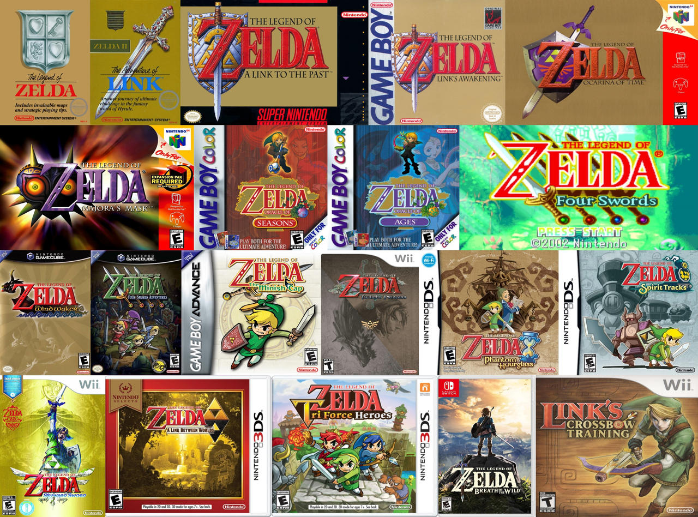

Juegos

- The Legend of Zelda (1986) - El primer juego de la serie, donde el héroe Link debe recolectar ocho fragmentos de la Trifuerza y rescatar a la princesa Zelda de Ganon.
- The Adventure of Link (1987) - Secuela directa del primer juego, con una jugabilidad más enfocada en la acción y la exploración. Link debe despertar a la princesa Zelda de un hechizo y derrotar a un nuevo enemigo, Link Oscuro.
- A Link to the Past (1991) - Un juego de la serie en 2D que presenta una historia épica. Link se embarca en una misión para rescatar a las doncellas y derrotar al malvado Ganon en el Reino de Hyrule.
- Link's Awakening (1993) - Un juego para Game Boy que cuenta la historia de Link varado en la isla de Koholint. Debe despertar al soñador y descubrir la verdad detrás de la isla.
- Ocarina of Time (1998) - Ampliamente considerado como uno de los mejores juegos de la historia, introduce la línea de tiempo dividida. Link se embarca en una aventura en 3D para derrotar a Ganon y salvar el Reino de Hyrule.
- Majora's Mask (2000) - Secuela directa de Ocarina of Time, presenta una estructura de tiempo única. Link debe evitar que la Luna caiga en Termina en solo tres días.
- Oracle of Ages (2001) y Oracle of Seasons (2001) - Dos juegos interconectados lanzados al mismo tiempo. En Oracle of Ages, Link viaja en el tiempo para rescatar a la princesa Zelda. En Oracle of Seasons, controla el poder de las estaciones para salvar a Hyrule.
- The Wind Waker (2002) - Un juego con un estilo artístico único y un vasto mundo acuático para explorar. Link debe rescatar a su hermana y enfrentarse a Ganon en un nuevo reino inundado.
- The Minish Cap (2004) - Link se embarca en una aventura para rescatar a la princesa Zelda y ayudar a los Minish, seres mágicos diminutos.
- Twilight Princess (2006) - Una historia más madura y oscura con una jugabilidad en 3D impresionante. Link se transforma en un lobo y debe salvar Hyrule de la amenaza del Crepúsculo.
- Phantom Hourglass (2007) - Secuela directa de The Wind Waker, utiliza la pantalla táctil de Nintendo DS para controlar a Link. Debe rescatar a Zelda de un fantasma malvado.
- Spirit Tracks (2009) - Link se embarca en una aventura en tren para rescatar a Zelda y restaurar los rieles espirituales. Utiliza el control de movimiento de Nintendo DS para controlar el tren y enfrentarse a enemigos.
- Skyward Sword (2011) - Una precuela de toda la serie, donde Link surca los cielos en busca de Zelda. Utiliza el control de movimiento de Wii para manejar la espada y enfrentar desafíos.
- A Link Between Worlds (2013) - Una secuela de A Link to the Past con un interesante sistema de juego. Link puede convertirse en un dibujo en 2D y explorar las paredes para resolver acertijos.
- Tri Force Heroes (2015) - Un juego multijugador donde tres Links deben trabajar juntos para superar desafíos y rescatar a una princesa.
- Breath of the Wild (2017) - Un juego de mundo abierto que rompe con las convenciones de la serie. Link despierta después de un largo sueño y debe derrotar a Ganon en un vasto y peligroso Hyrule.